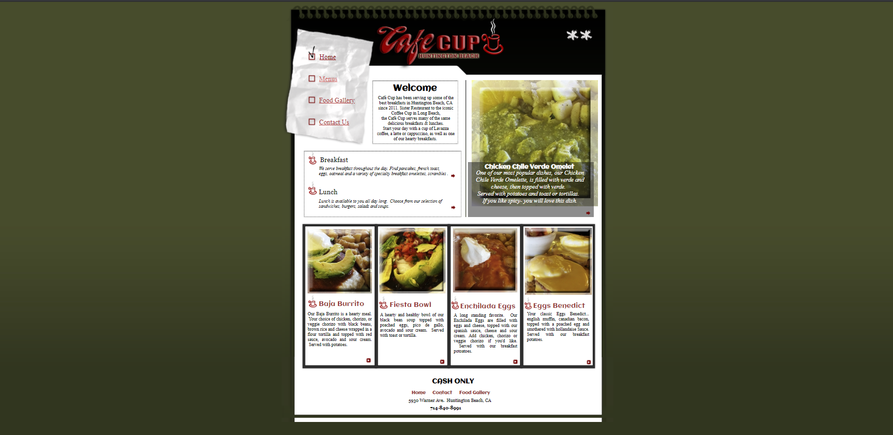
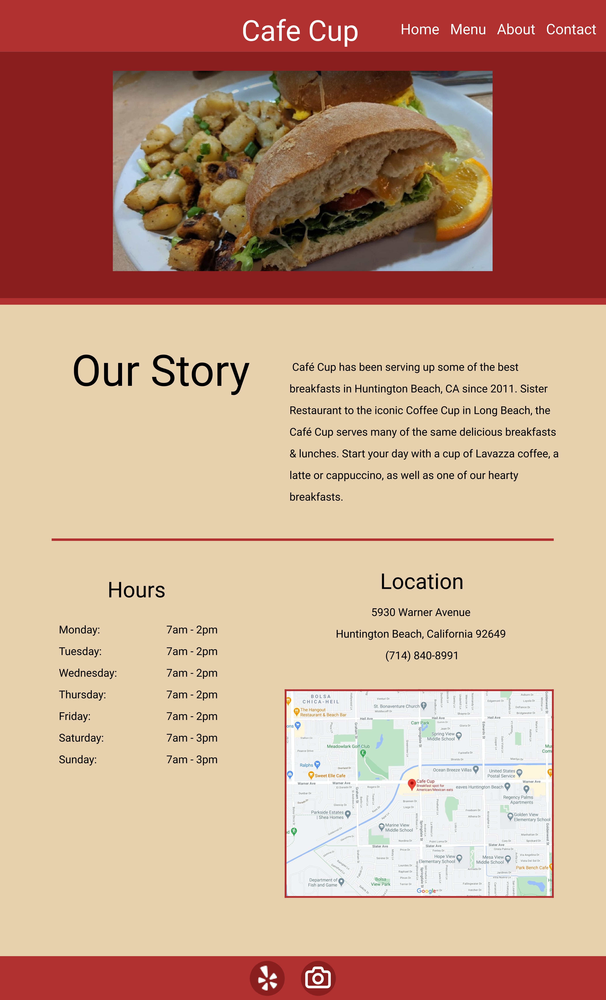
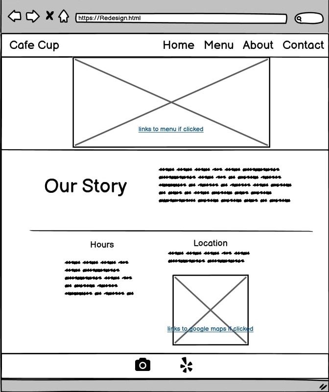
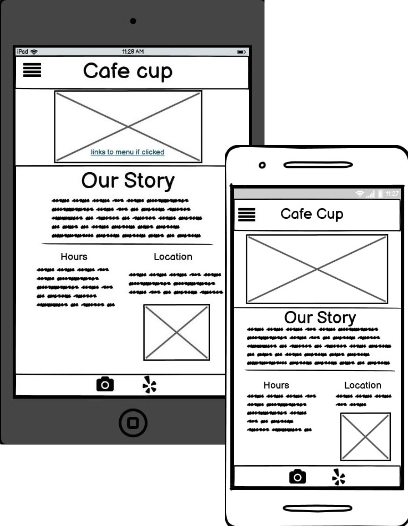
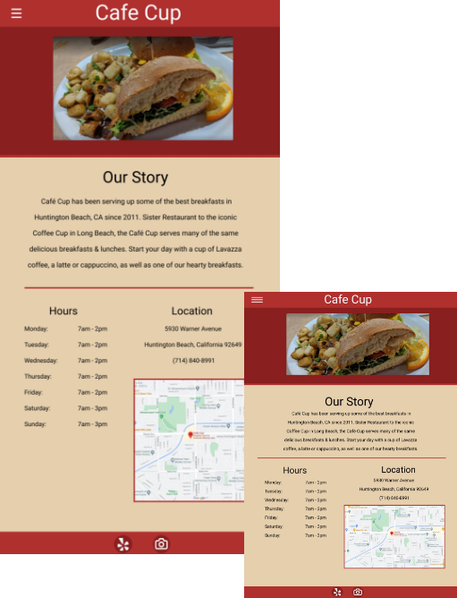
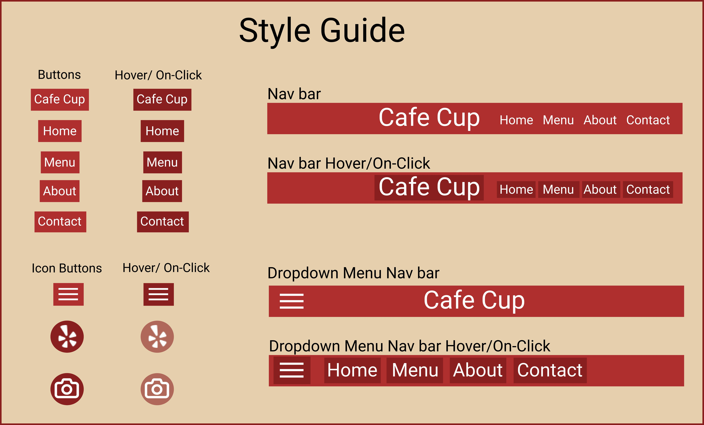

During my sophomore fall semester at Brown, my UI/UX class assigned us a project: pick a
website that was accessible to the public but could be redesigned to increase
usability.


Tools Used
HTML
CSS
Figma
Adobe XD
Categories
UI/UX
Web Design
Wireframes
Style Sheets
Research
Useability
The website has no cohesive layout; the important information is scattered
throughout the page in
random dividers varying in size. The navigation bar is also confusing because it's not in a traditional
places usually seen in websites. Additionally, the footer is missing the "menu" link and
doesn't have
all the components in the navigation bar.
The photos are unappealing, the font is too small and has some inconsistent spacing.
Overall, it feels dated and the layout of the buttons and the pictures makes the website hard to
use and navigate.
Learnability
This website is incredibly hard to learn. The small buttons in the lower right hand corners
are really
hard to even see. Plus, the hit boxes are only set to be
the
small buttons so the user has to learn that they can't just click the picture itself. These small
inconsistent details make the website confusing and unappealing.
Memorability
There is nothing either interface-wise or even graphic-wise that
stands out or makes the user want to come back to the site more than once. In fact, the website
actually makes the café more unappealing and unappetizing due to the crude pictures and the
disregard
for
the
appearance. This can potentially hurt business sales due to the first impressions and make
the
restaurant
feel as if they don't care.
Accessibility
Using WebAIM WAVE, the
program detected multiple errors both in the code and structural issues. There are 8
redundant
links to the menu,no alternative text for users that see the pictures on their
computer, and text that
was
barely visible due to poor contrast between the two colors. Because of these factors, I
believe that the
website could be redesigned to better optimize the structure and information on the page to help
user
accessibility.
Mockups
Low-fidelity Wireframes
Desktop

I completely redesigned the layout of the website to make it more streamlined and
readable for users. I added a navigation bar in
the header with clear access to the menu and the information about the website. I then wanted to
make sure the pictures of the food were easily seen and more appealing by putting them right
below the nav bar.
I increased the spacing of the dividers to show where the most important
information
is. Lastly, I made a footer at the bottom of the page to quickly access other
media outlets
for users to find out reviews for the cafe.
Tablet

Like the desktop version, I kept the same properties and layout for: the pictures below the nav
bar, important information below, and the footer and its
social media elements.
I decided to make a dropdown menu to condense the navigation bar, keeping the font large
enough
for the user.
I also changed the description part to better fit a smaller, more narrow screen;
due to the nature of touch screen technology, the user can just scroll down instead of reading
side-to-side.
Phone
The phone display is the same as the tablet version except with modified font size and grid template
size to accommodate for the user's phone.
High-fidelity Prototype
Using my lo-fi sketches, I translated it into HTML and CSS to create a new, more refined website for
the
cafe.
Desktop
For my hi-fi desktop mockup, I made an interactable navigation bar that links to the respective
sites on he original website. The picture rotates every 5 seconds to a new photo of the food
served at the location and can be clicked on to go to the menu.
Below the break line, the important information is easily readable and the location and the map
both link to google maps. The footer follows the user's scroll so
they can easily access the social media or yelp page for reviews.
Tablet

Similar to my lo-fi mockups, I replaced the straight menu with a dropdown menu to save space on
the smaller screens. Once clicked, the hamburger icon on the left creates the original menu
without the name of the Cafe. I also made the story description more linear
and adjusted the font size and the grid sizes.
I also made the interface more interactive with hover response and direct links from the images
to the sub-pages or websites associated.
Phone
The phone display is the same as the tablet version except with modified font size and grid
template
size to accommodate for the user's phone. Again, more streamlined and linear design which
creates a
better experience while swiping up.
Style guide
For my website, I chose to have a unifying style guide that helped bring all the elements together:

Last but not least, the responsiveness of my website is quite simple; once the width of the page gets to
a
certain pixel size, the fonts, pictures, navigation, and buttons all either increase or decrease in size
/
change formats entirely to fit the proffered screen.
From this project, I have learned that streamlined designs for websites with clear and recognizable
features can help the user understand the company as a whole. If websites are cluttered and confusing,
users first impression can hinder sales or costumer satisfaction. The better a webpage is, the
longer
the user will stay on and read what you say. An enjoyable, clear interface will help the user
gather the
necessary information they want and come back when they need to.